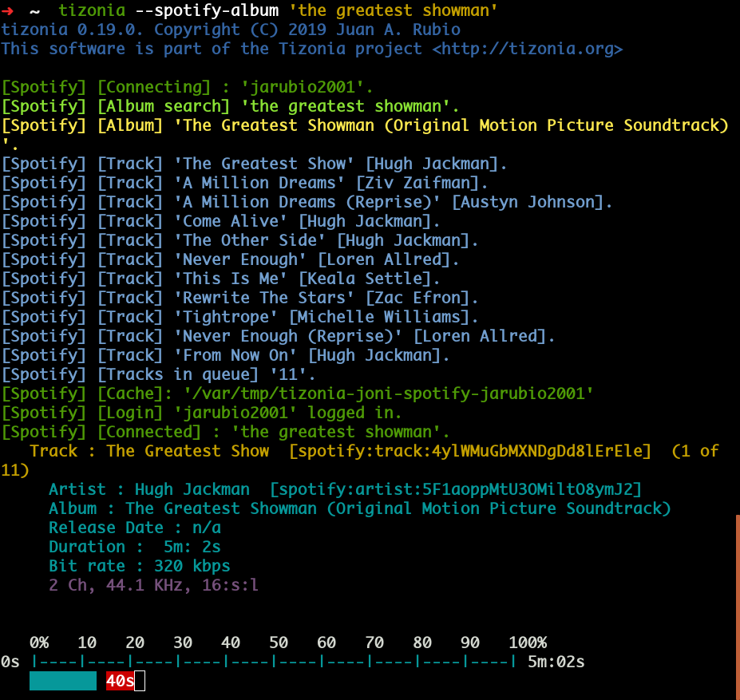
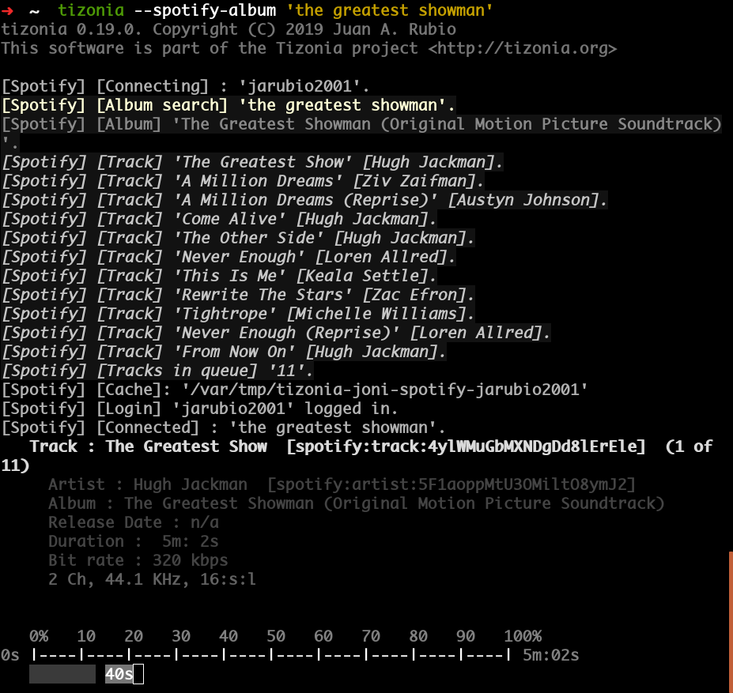
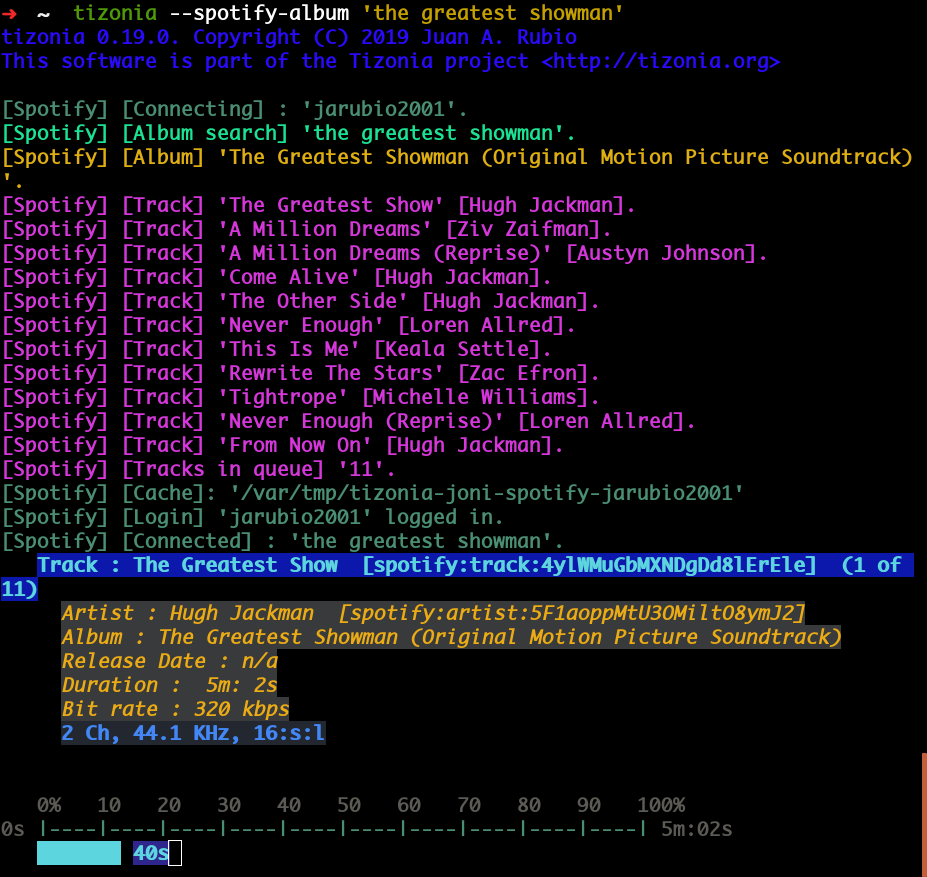
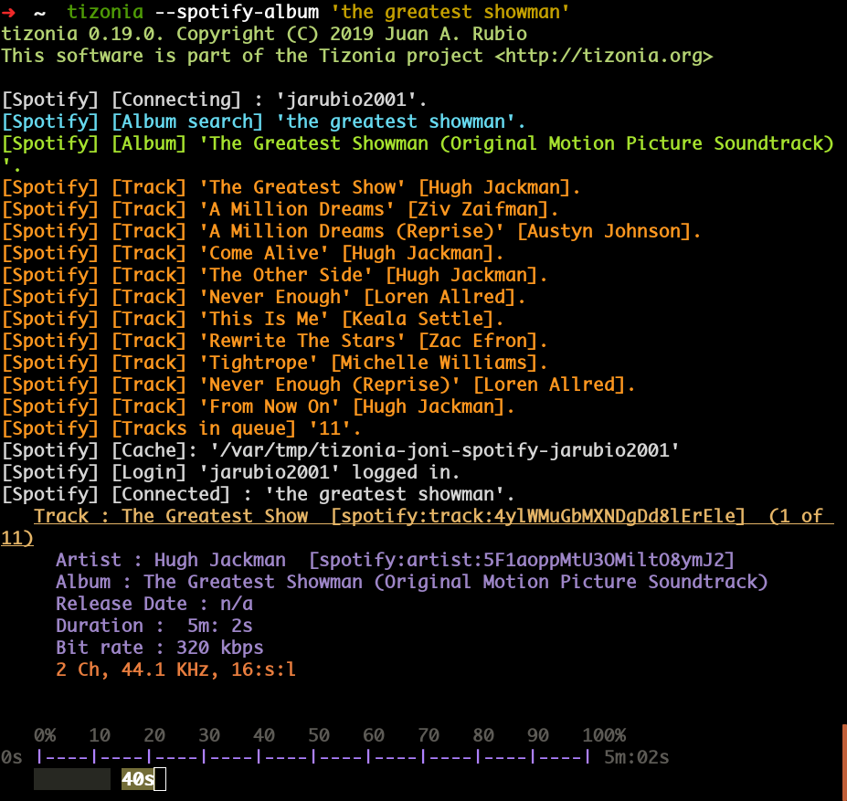

Color Themes¶
Tizonia supports color-themes. To customize the colors of Tizonia’s output on
the terminal, simply select one of the four color themes shipped within
tizonia.conf (available from 0.20.0+). The color themes are:
tizonia (the default theme),
black,
blink,
and monokai
Use these color themes as examples/templates. Adding new color themes should be relatively straightforward with a bit of experimentation.
To activate a particular color theme within tizonia.conf, simply select it
using the active-theme element in tizonia.conf (please check that your
terminal supports the corresponding color bit-depth).
1 2 3 4 5 6 7 8 9 10 11 12 13 14 15 16 17 18 19 20 21 22 23 24 25 26 27 28 29 30 31 32 33 34 35 36 37 38 39 40 41 42 43 44 45 46 47 48 49 50 51 52 53 | [color-themes]
# Tizonia uses around 16 different colors while displaying information on the
# terminal. These colors are referred to in this configuration file as:
# C01, C02, ..., C15, C16.
#
# There are three options for specifying the color codes (depending on the
# number of colors supported by the terminal; most terminals should support all
# three options).
#
# OPTION 1: 3/4-bit color codes
# https://en.wikipedia.org/wiki/ANSI_escape_code#3/4_bit
# Normal FG colors: 30-37 - Bright FG colors: 90-97
# Normal BG colors: 40-47 - Bright BG colors: 100-107
#
# OPTION 2: 8-bit color codes:
# https://en.wikipedia.org/wiki/ANSI_escape_code#8-bit
# 38,5,⟨n⟩ -> Foreground color
# 48,5,⟨n⟩ -> Background color
#
# OPTION 3: 24-bit color codes:
# https://en.wikipedia.org/wiki/ANSI_escape_code#24-bit
# 38,2,⟨r⟩,⟨g⟩,⟨b⟩ -> RGB foreground color
# 48,2,⟨r⟩,⟨g⟩,⟨b⟩ -> RGB background color
#
# In addition to the foreground and background color codes, the font display
# attributes or 'decorations' may also be specified.
#
# Display attributes (a.k.a. decorations):
# https://en.wikipedia.org/wiki/ANSI_escape_code#SGR_parameters
# 1 -> Bold, 2 -> Faint, 3 -> Italic, 4 -> Underline, 5 -> Slow blink,
# etc...
#
# Then, to specify a C01-C16 color for Tizonia, choose one of the bit depth
# options above and compose your Cxy code like this:
#
# Cxy = <fg>,<bg>,<attr>
#
# Note that there is no need to provide all three of <fg>, <bg> and <attr>, but
# at least one of them should be given for the Cxy color to be of any use.
#
# You can use multiple bit-depth definitions in a color theme (e.g. C01-C08
# defined using 3/4 bit codes, and C09-C16 using 24-bit), but you should stick
# with one bit-depth for <fg>,<bg> within the same Cxy definition.
#
#
#
# There are four color themes available in this config file:
#
# tizonia (the default theme), black, blink, and monokai
#
# To activate a color theme, add its name and uncomment the following line.
#
active-theme = tizonia
|
Color-theme: tizonia¶
# 'tizonia' color theme (default 3/4-bit theme).
# =============================================
# NOTE: C01-C07 -> Misc. colors.
# NOTE: C08-C12 -> These usually are bright FG colors, for some important messages.
# NOTE: C13-C16 -> The colors used in the progress bar display.
# IMPORTANT: Only commas are allowed between digits in the color definition, no SPACES!.
# ---------------------------------------------
tizonia.C01 = 31 # Red FG, no BG or Decoration - Hint: error messages.
tizonia.C02 = 32 # Green FG, no BG or Decoration - Hint: higher importance info messages.
tizonia.C03 = 33 # Yellow FG, no BG or Decoration - Hint: song/stream title.
tizonia.C04 = 34 # Blue FG, no BG or Decoration - Hint: normal importance info messages.
tizonia.C05 = 35 # Magenta FG, no BG or Decoration - Hint: other info messages (e.g. '2 Ch, 44.1 KHz, 16:s:b').
tizonia.C06 = 36 # Cyan FG, no BG or Decoration - Hint: various song/stream infos (e.g. album, duration, etc).
tizonia.C07 = 37 # White FG, no BG or Decoration - Hint: seldom used. For future use.
tizonia.C08 = 91 # Bright Red FG, no BG or Decoration - Hint: additional error messages.
tizonia.C09 = 92 # Bright Green FG, no BG or Decoration - Hint: additional higher importance info messages.
tizonia.C10 = 93 # Bright Yellow FG, no BG or Decoration - Hint: useful data, highlighted messages.
tizonia.C11 = 94 # Bright Blue FG, no BG or Decoration - Hint: tracks the in playlist.
tizonia.C12 = 95 # Bright Magenta FG, no BG or Decoration - Hint: other useful data messages.
tizonia.C13 = 36 # Cyan FG - Hint: the percentage bar.
tizonia.C14 = 37 # White FG - Hint: the digits in the percentage bar.
tizonia.C15 = 41 # Red BG - Hint: the song's elapsed time.
tizonia.C16 = 46 # Cyan BG - Hint: the moving progress bar itself (IMPORTANT: This must a BG code, no FG or attr.).
Color-theme: black¶
# 'Black' color theme (8-bit).
# ===========================
# NOTE: C01-C07 -> Misc. colors.
# NOTE: C08-C12 -> These usually are bright FG colors, for some important messages.
# NOTE: C13-C16 -> The colors used in the progress bar display.
# IMPORTANT: Only commas are allowed between digits in the color definition, no SPACES!.
# ---------------------------
black.C01 = 38,5,9 # Hint: error messages.
black.C02 = 38,5,249 # Hint: higher importance info messages.
black.C03 = 38,5,253,1 # Hint: song/stream title.
black.C04 = 38,5,243 # Hint: normal importance info messages.
black.C05 = 38,5,241 # Hint: other info messages (e.g. '2 Ch, 44.1 KHz, 16:s:b').
black.C06 = 38,5,238 # Hint: various song/stream infos (e.g. album, duration, etc).
black.C07 = 38,5,255 # Hint: seldom used. For future use.
black.C08 = 38,5,9 # Hint: additional error messages.
black.C09 = 38,5,230,48,5,233 # Hint: additional higher importance info messages.
black.C10 = 38,5,245,48,5,233 # Hint: useful data, highlighted messages.
black.C11 = 38,5,251,48,5,233,3 # Hint: tracks the in playlist.
black.C12 = 38,5,245,48,5,233 # Hint: other useful data messages.
black.C13 = 38,5,231 # Hint: the percentage bar.
black.C14 = 38,5,244 # Hint: the digits in the percentage bar.
black.C15 = 48,5,243 # Hint: the song's elapsed time (a BG code).
black.C16 = 48,5,237 # Hint: the moving progress bar itself (a BG code).
Color-theme: blink¶
# 'Blink' color theme (24-bit).
# =============================
# NOTE: C01-C07 -> Misc. colors.
# NOTE: C08-C12 -> These usually are bright FG colors, for some important messages.
# NOTE: C13-C16 -> The colors used in the progress bar display.
# IMPORTANT: Only commas are allowed between digits in the color definition, no SPACES!.
# -----------------------------
blink.C01 = 38,2,255,255,255,48,2,235,21,25 # Hint: error messages (default theme: red)
blink.C02 = 38,2,74,143,115 # Hint: higher importance info messages (default theme: green)
blink.C03 = 38,2,93,213,222,48,2,12,23,171,1 # Hint: song/stream title (default theme: yellow)
blink.C04 = 38,2,42,10,252 # Hint: normal importance info messages (default theme: blue)
blink.C05 = 38,2,66,135,245,48,2,35,40,48,1 # Hint: other info messages (e.g. '2 Ch, 44.1 KHz, 16:s:b') (default theme: magenta)
blink.C06 = 38,2,235,171,21,48,2,57,58,59,3 # Hint: various song/stream infos (e.g. album, duration, etc) (default theme: cyan)
blink.C07 = 38,2,255,255,255 # Hint: seldom used. For future use (default theme: white)
blink.C08 = 38,2,255,255,255,48,2,235,21,25 # Hint: additional error messages.
blink.C09 = 38,2,27,227,147 # Hint: additional higher importance info messages.
blink.C10 = 38,2,222,174,18 # Hint: useful data, highlighted messages.
blink.C11 = 38,2,214,55,219 # Hint: tracks the in playlist.
blink.C12 = 38,2,255,255,255 # Hint: other useful data messages.
blink.C13 = 38,2,74,143,115,5 # Hint: the percentage bar.
blink.C14 = 38,2,92,90,85 # Hint: the digits in the percentage bar. (NOTE: decoration: 5 -> blink)
blink.C15 = 38,2,93,213,222,48,2,46,38,140,1 # Hint: the song's elapsed time.
blink.C16 = 48,2,93,213,222 # Hint: the moving progress bar itself (IMPORTANT: This must a BG code, no FG or attr.).
Color-theme: monokai¶
# 'Monokai' color theme (24-bit).
# ==============================
# NOTE: C01-C07 -> Misc. colors.
# NOTE: C08-C12 -> These usually are bright FG colors, for some important messages.
# NOTE: C13-C16 -> The colors used in the progress bar display.
# IMPORTANT: Only commas are allowed between digits in the color definition, no spaces PLEASE!.
# ------------------------------
monokai.C01 = 38,2,121,121,121 # Hint: error messages (default theme: red)
monokai.C02 = 38,2,214,214,214 # Hint: higher importance info messages (default theme: green)
monokai.C03 = 38,2,229,181,103,4 # Hint: song/stream title (default theme: yellow)
monokai.C04 = 38,2,180,210,115 # Hint: normal importance info messages (default theme: blue)
monokai.C05 = 38,2,232,125,62 # Hint: other info messages (e.g. '2 Ch, 44.1 KHz, 16:s:b') (default theme: magenta)
monokai.C06 = 38,2,158,134,200 # Hint: various song/stream infos (e.g. album, duration, etc) (default theme: cyan)
monokai.C07 = 38,2,255,255,255 # Hint: seldom used. For future use (default theme: white)
monokai.C08 = 38,2,249,38,114 # Hint: additional error messages.
monokai.C09 = 38,2,102,217,239 # Hint: additional higher importance info messages.
monokai.C10 = 38,2,166,226,46 # Hint: useful data, highlighted messages.
monokai.C11 = 38,2,253,151,31 # Hint: tracks the in playlist.
monokai.C12 = 38,2,255,255,255 # Hint: other useful data messages.
monokai.C13 = 38,2,174,129,255 # Hint: the percentage bar.
monokai.C14 = 38,2,92,90,85 # Hint: the digits in the percentage bar. (NOTE: decoration: 5 -> blink)
monokai.C15 = 48,2,115,109,56,1 # Hint: the song's elapsed time.
monokai.C16 = 48,2,39,40,34 # Hint: the moving progress bar itself (IMPORTANT: This must a BG code, no FG or attr.).